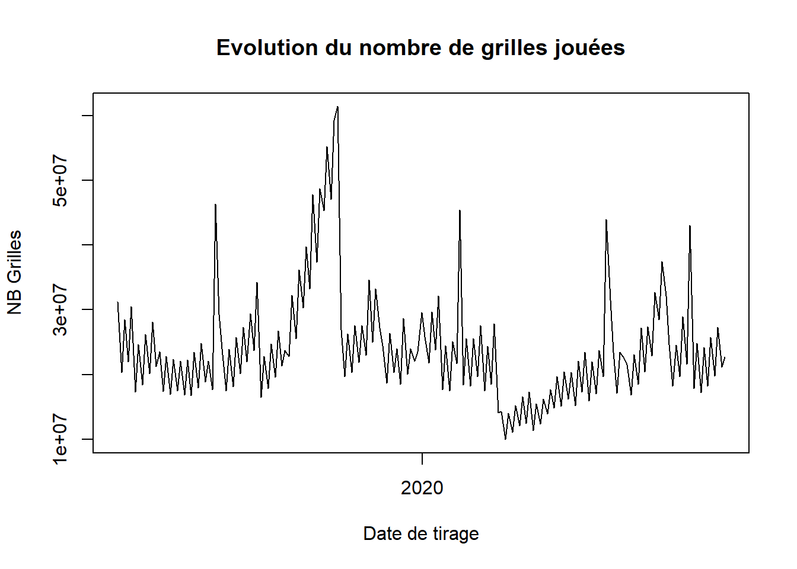
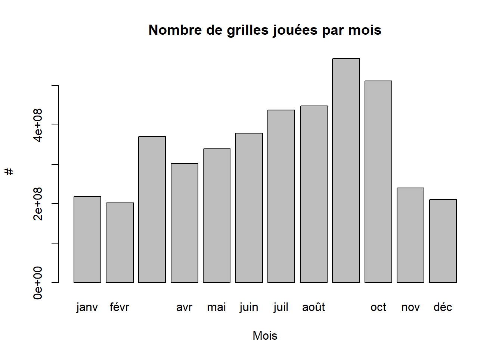

3 Application
Nous appliquons maintenant cette procédure que nous venons de décrire à notre travail. Nous voulons modéliser le nombre de fois que la somme des étoiles est supérieure à chacune des valeurs des boules B1 à B5.
\(y\) qui représente le nombre d’occurences est compris entre 0 et 5. Lorsque le nombre est égal à 0 alors toutes les boules tirées sont supérieure à 24. Lorsque \(y=1\) alors une boule tirée est inférieure à 24 et ainsi de suite jusqu’à ce que \(y=5\) qui signifie que toutes les boules tirées sont inférieures à 24.
Nous affichons une distribution d’occurence de ces évènements.
table(Y)Y
0 1 2 3 4
49 65 42 18 1 Selon ce tableau, dans 49 cas sur 175 toutes les boules tirées sont supérieures à la somme des étoiles, c’est-à-dire supérieures à 24. Dans 65 cas une boule tirée est inférieure à 24, dans 42 cas deux boules tirées sont inférieures à 24, dans 18, trois boules tirées sont inférieures à 24 et dans un seul cas seulement 4 boules tirées sont inférieures à 24. Aucun cas ne mentionne le fait que toutes les 5 boules tirées sont inférieures à 24.
C’est sur ce comptage que nous allons faire notre modélisation.
Mais avant de passer à la modélisation, nous estimons qu’il est important de choisir des variables exogènes au modèle, de présenter et de faire des statistiques descriptives sur ces variables exogènes en lien avec la distribution de la variable endogène.
Comme nous l’avons décrit au début de cette étude, le jeu de donnée contient 54 colonnes. On pourrait inclure toutes ces variables dans le modèle, nous avons assez de dégré de liberté de le faire puisque le nombre d’observation est de 175 soit plus de trois fois le nombre de variables. Toutefois nous cherchons un modèle simple à interpréter. Aussi inclure beaucoup trop de variables dans un modèles risque d’introduire des biais dans l’analyse. Parmi ces biais nous pouvons compter :
- La multicolinéarité : c’est lorsque plusieurs variables prédisent la même chose. c’est lorsque ces variables sont très corrélés voire parfaitement corrélées. Un exemple c’est le jour du tirage. Le tirage de l’Euromillion se fait deux fois par semaine : le mardi et le vendredi. Si nous incluons dans le modèle le jour de tirage alors vendredi est un prédicteur parfait de mardi.
- Le biais de surapprentissage (overfitting) : c’est lorsque le modèle apprend trop les caractéristiques particulières du présent échantillon si bien qu’il est difficile de généraliser le résultat à d’autres échantillons.
3.1 Les hypothèses de recherche
Il convient de présenter les hypothèses que nous aimerions tester ici.
- Le nombre de gagnants au range 12 millions d’euros n’a pas d’effets sur la somme des étoiles.
- La somme de toutes les boules a un effet négatif sur le nombre d’occurence.
- Le nombre de boules jouées n’a pas d’effet sur le nombre d’occurences
- Il y a plus de grilles jouées les mardis que les vendredis
- Lorsque la première étoile est supérieure à la deuxième alors toute chose égale par ailleurs le nombre d’occurences est supérieure à 0.
3.1.1 Choix des variables
Pour ces raisons voici la liste des variables que nous choisissons :
- Somme des boules B1 à B5
- Nombre de gagnants
- Nombre de boules jouées
- Première boule supérieure à la deuxième boule (variable binaire indicatrice)
- Le jour du tirage est mardi (variable binaire)
- Le mois de Septembre (variable binaire)
- Le jour du mois
3.2 Statistiques et visualisations
3.2.1 Evolution des grilles jouées
plot(x = DB$date_de_tirage, DB$nbGrillesJouees, main = "Evolution du nombre de grilles jouées", type = "l", xlab = "Date de tirage", ylab = "NB Grilles") Le nombre de grilles jouées dépend des périodes de l’années.
barplot(xtabs(nbGrillesJouees~Mois_fct, data = DB), main = "Nombre de grilles jouées par mois", xlab = "Mois", ylab = "#")
Il y a beaucoup de grilles jouées en septembre et en octobre. Nous allons inclure dans le modèle La variable septembre.
t.test(nbGrillesJouees~Mardi, data = DB)
Welch Two Sample t-test
data: nbGrillesJouees by Mardi
t = 5.2249, df = 171.85, p-value = 4.999e-07
alternative hypothesis: true difference in means is not equal to 0
95 percent confidence interval:
3976947 8806108
sample estimates:
mean in group 0 mean in group 1
27337378 20945850 Le test t-test de Welsh indique qu’il existe une différence significative entre les moyennes de grilles jouées mardi ou vendredi. Il y a plus de grilles qui sont jouées vendredi que mardi.